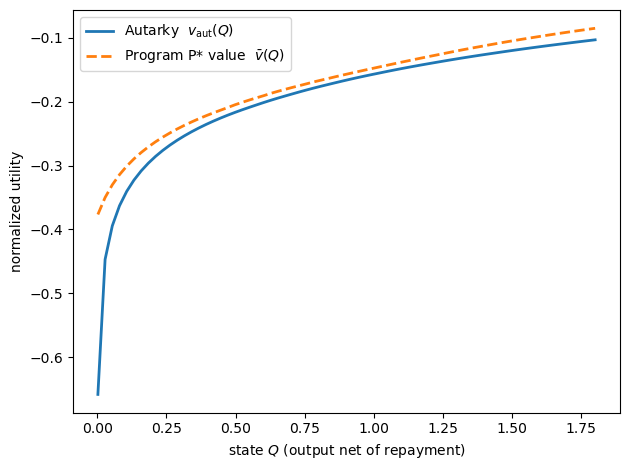
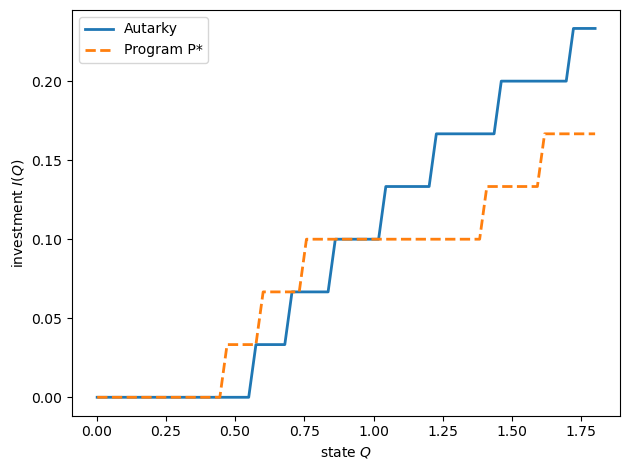
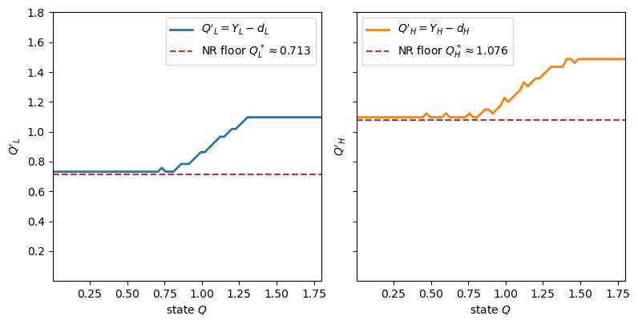
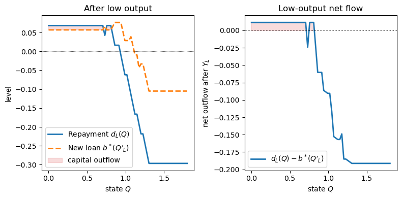
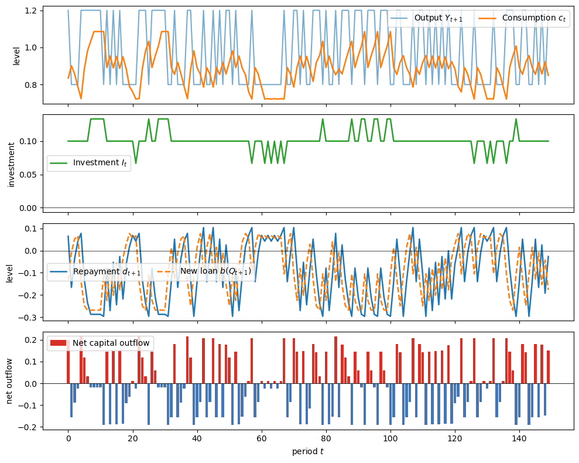
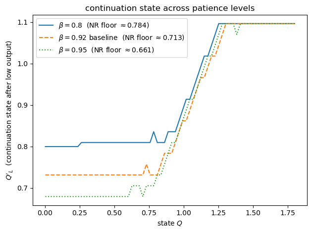
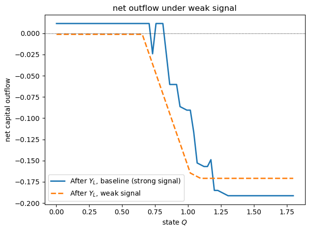

61. International Lending with Moral Hazard and Risk of Repudiation#
61.1. Overview#
This lecture studies Atkeson [1991], which examines the constrained optimal pattern of capital flows between an international lender and a sovereign borrower subject to two frictions:
Moral hazard: lenders cannot observe whether the borrower invests or simply consumes loan proceeds.
Risk of repudiation: as a sovereign, the borrower can unilaterally renounce its debt at any time.
A central result is that, under the informativeness and interiority conditions stated below, an optimal contract can require the borrowing country to export capital after the lowest output realizations.
These low-output outflows are part of the mechanism that incentivizes investment.
The model extends recursive techniques from Abreu et al. [1986], Abreu et al. [1990], and Spear and Srivastava [1987] to an environment with a physical state variable that changes across periods.
61.2. The environment#
61.2.1. Technology#
Time is discrete, \(t = 0, 1, 2, \ldots\).
In each period the borrower chooses investment \(I_t \geq 0\).
Output next period takes values in a finite, ordered set \(\mathcal{Y} = \{Y_1,\ldots,Y_N\}\) with \(0 < Y_1 < \cdots < Y_N\).
The technology is built from two fixed probability distributions on \(\mathcal{Y}\), which we call \(g_0\) and \(g_1\).
We think of \(g_1\) as the output distribution when investment is lowest and \(g_0\) as the output distribution when investment is highest.
Accordingly \(g_0\) places relatively more weight on high outputs than \(g_1\) does.
Investment does not reshape these two distributions; it only changes how likely output is to be drawn from one rather than the other.
With probability \(\lambda(I)\) output is drawn from the favorable distribution \(g_0\), and with probability \(1 - \lambda(I)\) it is drawn from \(g_1\), so given investment \(I_t\) next period’s output \(Y_{t+1}\) has the mixture distribution
The weight \(\lambda : [0,I_{\max}] \to [0,1]\) is strictly increasing and concave,
so more investment always raises the chance of the favorable distribution, but with diminishing returns.
Every output level keeps strictly positive probability at every investment level, \(g(Y_i;I)>0\) for all \(i\), so no single realization ever fully reveals how much the borrower invested.
Finally, the likelihood ratio \(g_0(Y_i)/g_1(Y_i)\) is increasing in \(i\), the monotone likelihood-ratio condition.
Since higher investment raises \(\lambda(I)\), high output is relatively good news about investment, while low output is relatively strong evidence that the borrower invested little.
61.2.2. Agents and preferences#
The borrower is an infinitely-lived, risk-averse agent with normalized discounted utility
Assumption 61.1 (Preferences and Autarky)
The borrower has discount factor \(\beta \in (0,1)\) and period utility \(u(c)\) that is increasing, strictly concave, bounded above, and satisfies \(u'(0)=+\infty\).
Lenders are short-lived and risk neutral.
The borrower’s autarky value is high enough to rule out equilibrium states with arbitrarily low current consumption:
where \(\bar u\) is an upper bound for period utility.
The last inequality is Atkeson’s lower-bound condition.
It ensures that very low current consumption cannot be compensated by even the best possible future utility, so the relevant state space can be bounded away from such outcomes.
Here \(\sigma\) denotes an allocation, a complete state-contingent plan for consumption, investment, and the associated loans and repayments, written out in full in feasibility condition (61.2).
\(\mathbb{E}_0^{\sigma}\) is the expectation over output histories that this plan induces, evaluated at date \(0\).
The factor \((1 - \beta)\) normalizes lifetime utility to per-period units, so \(v\) is comparable to a one-period payoff.
Lenders are a sequence of short-lived, risk-neutral agents, one born each period.
The lender born at \(t\) extends loan \(b_t\) when young and collects state-contingent repayment \(d_{t+1}(Y_{t+1})\) when old.
A lender’s participation constraint is
Assumption 61.2 (Lender Commitment and Deposit Seizure)
Young lenders can commit to honor the contract when they are old, including states in which the repayment \(d_{t+1}(Y_{t+1})\) is negative and the borrower is withdrawing deposits.
If a borrower repudiates a loan, the old lender whose loan was repudiated can seize the borrower’s later deposits with future lenders until the loss is compensated.
These assumptions prevent the borrower from defaulting on one lender and then using deposits with future lenders to smooth consumption.
They are what make exclusion into autarky a credible punishment after repudiation in this environment.
61.2.3. State variable and feasibility#
Define
as output net of repayment.
It is the resources available to the borrower after settling the old lender’s claim.
An allocation \(\sigma = \{c_t(Q^t),\,I_t(Q^t),\,b_t(Q^t),\,d_{t+1}(Y_{t+1};Q^t)\}\) is feasible if for all \(t\) and histories:
where \(M\) is the lender’s endowment per period.
61.2.4. Autarky value#
The value the borrower can attain without credit access satisfies
61.3. Two impediments to contracting#
61.3.1. Moral hazard#
The contract can condition on observable histories, but not directly on the borrower’s investment.
An allocation is a full history-contingent plan
The loan and repayment schedules, \(b\) and \(d\), are contract terms.
The borrower privately chooses consumption and investment.
Hence incentive compatibility must rule out deviations in the whole future consumption-investment plan, not just in current investment.
The allocation \(\sigma\) is incentive compatible if, after every history \(Q^t\), the borrower cannot improve by choosing another feasible consumption-investment plan while keeping the same \(b\) and \(d\):
The lender observes output histories and can make future loans and repayments depend on those histories.
The lender cannot make them depend directly on hidden investment.
This mirrors the terminology in Repeated Moral Hazard, where incentive compatibility means that the agent prefers the recommended hidden action to a deviation.
61.3.2. Risk of repudiation#
The borrower is sovereign and can refuse to repay.
Suppose that after history \(Q^t\), output \(Y_{t+1}\) is realized and the contract calls for repayment \(d_{t+1}(Y_{t+1}; Q^t)\).
If the borrower repays, next period’s state is
If the borrower repudiates instead, it keeps the whole output \(Y_{t+1}\) but is excluded from future borrowing.
The relevant outside option is therefore autarky starting with \(Y_{t+1}\).
This distinction matters because \(Q_{t+1}\) is the state after repayment, while default lets the borrower keep the resources that would have been repaid.
An allocation is immune from repudiation if
for all \(t\), histories \(Q^t\), and output realizations \(Y_{t+1}\).
The left side is the value of continuing with the contract after repayment.
The right side is the punishment value after default.
61.4. The constrained Pareto problem#
The planner chooses among allocations that satisfy five restrictions:
Feasibility (61.2)
Borrower individual rationality: \(v(\sigma \mid Q^t) \geq v_{\text{aut}}(Q_t)\)
Lender participation (61.1)
Immunity from repudiation (61.4)
Incentive compatibility (61.3)
An allocation is constrained Pareto optimal if it maximizes the borrower’s initial payoff \(v(\sigma)\) over this constrained set.
Borrower individual rationality is part of the general feasible set.
When the recursive problem maximizes the borrower’s payoff on the Pareto frontier, however, this constraint is nonbinding and can be dropped from that maximization.
The lender’s expected payoff from its loan contract must be nonnegative.
These restrictions are continuation restrictions.
After every possible history, the continuation allocation must again be feasible, satisfy individual rationality and lender participation, be immune from repudiation, and be incentive compatible.
61.5. Recursive formulation#
61.5.1. Self-generation and factorization#
Let \(\mathcal V(Q)\) be the set of payoffs the borrower can achieve from allocations satisfying feasibility (61.2), borrower individual rationality, lender participation (61.1), no-repudiation (61.4), and incentive compatibility (61.3) when the state is \(Q\).
The recursive formulation extends the self-generation and factorization arguments of Abreu et al. [1990] to a setting with a physical state variable.
Let \(A := (c, I, b, d')\) collect the current controls: consumption, investment, the current loan, and the next-period repayment schedule.
A pair \((A, v)\) of current controls and a continuation value function is admissible with respect to \(W\) at \(Q\) if it satisfies one-period versions of these same restrictions and \(v(Q') \in W(Q')\) for all \(Q'\).
Let \(\mathcal B(W)(Q)\) be the set of payoffs generated by admissible pairs.
The operator \(\mathcal B\) asks a simple question.
Suppose future continuation payoffs must lie in the candidate set \(W\).
Which current payoffs can we generate today while respecting feasibility, individual rationality, lender participation, no-repudiation, and incentive compatibility?
Those payoffs form \(\mathcal B(W)(Q)\).
A set \(W\) is self-generating if every payoff in \(W\) can be generated again by using current controls and continuation payoffs that remain in \(W\).
Thus a self-generating set can reproduce itself recursively.
Factorization goes in the other direction.
It says that any payoff from a valid full contract can be split into two parts: current controls today and a continuation payoff after each possible next state.
Because the continuation contract must also be valid, those continuation payoffs lie in \(\mathcal V\).
Two propositions characterize the utility possibility correspondence.
Proposition 61.1 (Self-generation)
If \(W\) is self-generating, with \(W(Q) \subseteq \mathcal B(W)(Q)\) for all \(Q\), then \(\mathcal B(W)(Q) \subseteq \mathcal V(Q)\) for all \(Q\).
Proposition 61.2 (Factorization)
\(\mathcal V(Q) \subseteq \mathcal B(\mathcal V)(Q)\) for all \(Q\).
Together, Proposition 61.1 and Proposition 61.2 imply \(\mathcal V = \mathcal B(\mathcal V)\), characterizing the utility possibility correspondence as the fixed point of \(\mathcal B\).
61.5.2. Program P*#
The correspondence \(\mathcal V\) describes all feasible continuation payoffs.
The constrained Pareto problem selects the upper envelope of that correspondence: for each state \(Q\), it asks for the highest borrower payoff that can be delivered while respecting the contracting restrictions.
Call this frontier \(\bar v(Q)\).
Assumption 61.3 (Continuity of the Frontier)
The constrained-optimal value function \(\bar v(Q)\) is continuous in the state variable \(Q\) on the relevant bounded state space.
Under Assumption 61.3, Program P* is the Bellman equation for the frontier.
The continuity condition is a substantive qualification: the functional equation below is the recursive characterization once this regularity is in place.
Proposition 61.3 (Program P*)
Under Assumption 61.3, \(\bar v(Q)\) satisfies the functional equation
subject to feasibility (61.2), lender participation (61.1), no-repudiation (61.4), and incentive compatibility (61.3).
Borrower individual rationality is omitted here because it is nonbinding when the frontier maximizes the borrower’s payoff.
Moreover, the optimal continuation value function equals \(\bar v\) itself.
This mirrors Bellman’s principle: the continuation of the optimal contract is itself optimal at the updated state.
Bellman’s principle of optimality says that an optimal plan remains optimal from any future state it reaches.
Here that means the contract chosen today does not need a separate continuation rule after tomorrow’s output is realized.
Once the new state \(Q' = Y' - d'(Y')\) is reached, the continuation contract is again described by the same value function \(\bar v(Q')\).
61.5.3. Capital outflows after the lowest outputs#
To see where the repayment result comes from, first write the one-period problem with continuation values as choice variables.
This first-order argument is not unconditional.
Assumption 61.4 (First-Order Approach)
At the constrained optimum, the expected value of repayments to lenders is nondecreasing in investment:
This is the weak form of Atkeson’s repayment-monotonicity condition; a strict inequality is the stronger version that rules out degenerate cases.
The constrained-optimal investment choice is interior: \(I^* \in (0,I_{\max})\).
Together with the concavity of \(\lambda\) and the monotone likelihood-ratio condition introduced above, Assumption 61.4 justifies replacing the incentive-compatibility condition by the relaxed first-order inequality used in the Lagrangian.
Let \(v_j\) be the continuation value promised after output \(Y_j'\).
where \(d_j\) is the repayment due after output \(Y_j'\).
Let \(g_j(I) = g(Y_j'; I)\) and \(g_{I,j} = \partial g(Y_j'; I) / \partial I\).
A Lagrangian for the relaxed one-period problem has the form
Here \(\lambda_f\) is the feasibility multiplier, \(\lambda_\ell\) is the lender-participation multiplier, \(\mu_j\) is the no-repudiation multiplier after output \(Y_j'\), \(\eta\) is the multiplier on the relaxed investment-incentive condition, and \(\xi_j\) enforces consistency between \(v_j\) and the frontier value \(\bar v(Q_j')\).
In the numbered notation of Atkeson [1991], \(\mu_3(Y_j')\) corresponds to \(\mu_j\) and \(\mu_4\) corresponds to \(\eta\).
The first-order condition with respect to \(v_j\) is, up to the common positive scale factor \(\beta g_j(I)\),
Atkeson’s argument applies when the relaxed investment-incentive constraint is active, so \(\eta > 0\).
Hence a sufficiently negative value of \(g_{I,j}/g_j(I)\) forces \(\mu_j > 0\).
Thus the likelihood term \(g_{I,j}/g_j(I)\) determines which output states put the most pressure on the no-repudiation constraint.
For low outputs, higher investment makes the realization less likely, so \(g_{I,j}/g_j(I)\) is negative.
By the monotone likelihood ratio property, this log-likelihood derivative is most negative for the lowest output states.
When (61.7) requires \(\mu_j > 0\), complementary slackness implies that the no-repudiation constraint binds:
Repayment \(d_j\) is then at its maximum and the new loan available at the continuation state is limited.
Thus the borrower has a capital outflow:
Strict capital outflow requires the inequality to be strict.
61.6. Computation#
We now compute a grid approximation to Program P*.
In addition to what’s in Anaconda, this lecture will need the following library:
!pip install jax
We will use the following imports:
import numpy as np
from typing import NamedTuple
from scipy.interpolate import interp1d
from jax import config
config.update("jax_enable_x64", True)
import jax
import jax.numpy as jnp
import matplotlib.pyplot as plt
61.6.1. Setup#
Let’s start by defining the model primitives and the state grid.
In the code the favorable distribution \(g_0\) is g_high, the output
distribution when investment is at its maximum, and the unfavorable
distribution \(g_1\) is g_low, the distribution when investment is zero.
With only two outputs, the monotone likelihood-ratio property \(g_0(Y_i)/g_1(Y_i)\) increasing in \(i\) reduces to \(g_0(Y_H)/g_1(Y_H) > 1 > g_0(Y_L)/g_1(Y_L)\).
Thus \(Y_L\) is evidence of low investment, while \(Y_H\) is evidence of high investment.
# Model parameters
class Model(NamedTuple):
β: float # discount factor
I_max: float # upper bound on investment
Y: np.ndarray # output states
M: float # lender endowment (b, -d <= M)
g_high: np.ndarray # distribution at I_max
g_low: np.ndarray # distribution at I = 0
κ: float # curvature in the investment-probability map
def create_model(β=0.92,
I_max=0.6,
Y=(0.8, 1.2),
M=0.3,
g_high=(0.05, 0.95),
g_low=(0.95, 0.05),
κ=3.0):
"""Build a model instance, validating the parameters."""
if not 0 < β < 1:
raise ValueError("β must lie in (0, 1)")
Y = np.asarray(Y, dtype=float)
if np.any(np.diff(Y) <= 0):
raise ValueError("output states must be strictly increasing")
g_high, g_low = np.asarray(g_high), np.asarray(g_low)
if not (np.isclose(g_high.sum(), 1.0)
and np.isclose(g_low.sum(), 1.0)):
raise ValueError("probability vectors must sum to 1")
return Model(β=β, I_max=I_max, Y=Y, M=M,
g_high=g_high, g_low=g_low, κ=κ)
model = create_model()
β, I_max, Y, M, κ = model.β, model.I_max, model.Y, model.M, model.κ
g_high, g_low = model.g_high, model.g_low
Y_L, Y_H = Y
# State grid: Q = Y - d (resources after repaying old debt)
N_Q = 70
N_I = 19
Q_MIN = 0.002
Q_MAX = 1.8
Q_grid = np.linspace(Q_MIN, Q_MAX, N_Q)
Q_grid_j = jnp.asarray(Q_grid)
I_grid = np.linspace(0.0, I_max, N_I)
I_grid_j = jnp.asarray(I_grid)
Y_j = jnp.asarray(Y)
Qp_L_mesh, Qp_H_mesh = np.meshgrid(Q_grid, Q_grid, indexing='ij')
Qp_flat = jnp.asarray(np.column_stack((Qp_L_mesh.ravel(),
Qp_H_mesh.ravel())))
n_pair = Qp_flat.shape[0]
# Utility
def u(c):
return np.log(np.maximum(c, 1e-12))
def u_jax(c):
return jnp.log(jnp.maximum(c, 1e-12))
def lambda_weight(I):
x = np.clip(I / I_max, 0.0, 1.0)
return (1 - np.exp(-κ * x)) / (1 - np.exp(-κ))
def lambda_weight_jax(I):
x = jnp.clip(I / I_max, 0.0, 1.0)
return (1 - jnp.exp(-κ * x)) / (1 - jnp.exp(-κ))
def g_of_I(I, g_high_val=None, g_low_val=None):
if g_high_val is None:
g_high_val = g_high
if g_low_val is None:
g_low_val = g_low
λ = lambda_weight(I)
return λ[..., None] * g_high_val + (1 - λ[..., None]) * g_low_val
def g_of_I_jax(I, g_high_val, g_low_val):
λ = lambda_weight_jax(I)
return λ[..., None] * g_high_val + (1 - λ[..., None]) * g_low_val
print(f"Likelihood ratios g_low / g_high : {g_low / g_high}")
print(f"Y_L signals low investment with ratio {g_low[0]/g_high[0]:.1f}x")
Likelihood ratios g_low / g_high : [19. 0.05263158]
Y_L signals low investment with ratio 19.0x
Note
The computation uses log utility, \(u(c)=\log(c)\), as a numerical illustration.
This relaxes the bounded-above primitive utility assumption used in the existence argument of Assumption 61.1.
On the finite grid, with finite resource bounds, the objective nonetheless remains bounded.
61.6.2. Autarky value function#
In autarky the borrower has no access to credit.
Starting each period with resources \(Q\), the borrower solves
Note that the continuation values depend only on \(Y_L\) and \(Y_H\), not on the current \(Q\), because next period’s state is simply the realized output.
@jax.jit
def autarky_operator_jax(V, β_val, g_high_val, g_low_val):
"""One vectorized Bellman step for the autarky problem."""
V_Y = jnp.interp(Y_j, Q_grid_j, V)
g_I = g_of_I_jax(I_grid_j, g_high_val, g_low_val)
EV_I = g_I @ V_Y
c = Q_grid_j[:, None] - I_grid_j[None, :]
val = (1 - β_val) * u_jax(c) + β_val * EV_I[None, :]
val = jnp.where(c >= 1e-10, val, -jnp.inf)
idx = jnp.argmax(val, axis=1)
return jnp.max(val, axis=1), I_grid_j[idx]
def autarky_vfi(β_val=None,
g_high_val=None,
g_low_val=None,
tol=1e-8,
max_iter=3000,
verbose=True):
"""Value function iteration for the autarky problem."""
if β_val is None:
β_val = β
if g_high_val is None:
g_high_val = g_high
if g_low_val is None:
g_low_val = g_low
V = jnp.zeros(N_Q)
g_high_j = jnp.asarray(g_high_val)
g_low_j = jnp.asarray(g_low_val)
for it in range(max_iter):
V_new, policy_I = autarky_operator_jax(V, β_val,
g_high_j, g_low_j)
diff = float(jnp.max(jnp.abs(V_new - V)))
V = V_new
if diff < tol:
if verbose:
print(
f"Autarky VFI converged in {it+1} iterations "
f"(diff={diff:.2e})"
)
break
return np.asarray(V), np.asarray(policy_I)
V_aut, I_aut = autarky_vfi()
Autarky VFI converged in 171 iterations (diff=9.56e-09)
61.6.3. Program P*#
We solve Program P* iteratively.
At each state \(Q\), the planner chooses current investment \(I\) and continuation states \((Q'_L,Q'_H)\), equivalently repayments \(d_j = Y_j - Q'_j\).
With lender participation imposed as binding, the loan is determined by
and current consumption is \(c^* = Q + b^* - I\).
We impose lender participation as binding in the displayed calibration.
This is valid here because the implied loan remains below \(M\), and the code discards any candidate whose zero-profit loan would exceed \(M\).
If instead \(M\) binds, \(b\) must be treated as a separate constrained choice, or set to \(\min\{M,\,\beta\sum_j d_j g(Y_j;I)\}\) for each candidate.
On the two-output grid, the search is over \(I\) and \((Q'_L,Q'_H)\):
subject to:
(NR) \(v(Q'_j) \geq v_{\text{aut}}(Y_j)\), i.e. \(Q'_j \geq Q^*_j\)
(IC) \(I\) solves the borrower’s hidden investment problem
(F) \(c^* \geq 0\)
The code enforces IC by checking every alternative investment on I_grid.
def find_Qmin(V_arr, v_thresh):
"""Return min Q on grid with value above the no-repudiation bound."""
if v_thresh <= V_arr[0]:
return float(Q_MIN)
if v_thresh >= V_arr[-1]:
return float(Q_MAX)
# Use searchsorted on a monotone version of V
V_mono = np.maximum.accumulate(V_arr) # enforce monotone for inversion
idx = np.searchsorted(V_mono, v_thresh)
idx = np.clip(idx, 1, N_Q - 1)
denom = V_mono[idx] - V_mono[idx-1]
if abs(denom) < 1e-14:
return float(Q_grid[idx-1])
t = (v_thresh - V_mono[idx-1]) / denom
return float(Q_grid[idx-1] + t * (Q_grid[idx] - Q_grid[idx-1]))
@jax.jit
def program_p_bellman_step_jax(V, V_aut_arr, I_aut_arr,
β_val, g_high_val, g_low_val, Qp_min):
"""
One grid Bellman step for Program P*.
"""
g_I = g_of_I_jax(I_grid_j, g_high_val, g_low_val)
V_pair = jnp.column_stack((
jnp.interp(Qp_flat[:, 0], Q_grid_j, V),
jnp.interp(Qp_flat[:, 1], Q_grid_j, V)
))
d_pair = Y_j[None, :] - Qp_flat
pair_ok = (
(Qp_flat[:, 0] >= Qp_min[0])
& (Qp_flat[:, 1] >= Qp_min[1])
& jnp.all(-d_pair <= M, axis=1)
)
b = β_val * jnp.einsum("iy,py->ip", g_I, d_pair)
EV = jnp.einsum("iy,py->ip", g_I, V_pair)
candidate_ok = pair_ok[None, :] & (b <= M)
resources = Q_grid_j[:, None, None] + b[None, :, :]
c = resources - I_grid_j[None, :, None]
obj = (1 - β_val) * u_jax(c) + β_val * EV[None, :, :]
dev_best = jnp.full(obj.shape, -jnp.inf)
for i_alt in range(N_I):
I_alt = I_grid_j[i_alt]
EV_alt = jnp.einsum("y,py->p", g_I[i_alt], V_pair)
c_alt = resources - I_alt
dev = ((1 - β_val) * u_jax(c_alt)
+ β_val * EV_alt[None, None, :])
dev = jnp.where(c_alt >= 1e-10, dev, -jnp.inf)
dev_best = jnp.maximum(dev_best, dev)
feasible = (
candidate_ok[None, :, :]
& (c >= 1e-10)
& (obj >= dev_best - 1e-8)
)
obj = jnp.where(feasible, obj, -jnp.inf)
flat = obj.reshape((N_Q, -1))
idx = jnp.argmax(flat, axis=1)
best_val = jnp.max(flat, axis=1)
has_feasible = jnp.isfinite(best_val)
I_flat = jnp.repeat(I_grid_j, n_pair)
b_flat = b.reshape(-1)
Qp_L_flat = jnp.tile(Qp_flat[:, 0], N_I)
Qp_H_flat = jnp.tile(Qp_flat[:, 1], N_I)
use_autarky = (~has_feasible) | (best_val < V_aut_arr)
V_new = jnp.where(use_autarky, V_aut_arr, best_val)
pol_I = jnp.where(use_autarky, I_aut_arr, I_flat[idx])
pol_b = jnp.where(use_autarky, 0.0, b_flat[idx])
pol_Qp = jnp.column_stack((
jnp.where(use_autarky, Y_j[0], Qp_L_flat[idx]),
jnp.where(use_autarky, Y_j[1], Qp_H_flat[idx])
))
return V_new, pol_I, pol_b, pol_Qp
def program_p_bellman(V, V_aut_arr, I_aut_arr,
β_val=None,
g_high_val=None,
g_low_val=None,
ε=0.0):
"""
One Bellman step for Program P*.
"""
if β_val is None:
β_val = β
if g_high_val is None:
g_high_val = g_high
if g_low_val is None:
g_low_val = g_low
Vaut_f = interp1d(Q_grid, V_aut_arr, fill_value='extrapolate',
bounds_error=False)
Vaut_Y = np.array([float(Vaut_f(yj)) for yj in Y]) + ε
Qp_min = np.array([find_Qmin(V, v) for v in Vaut_Y])
Qp_min = np.clip(Qp_min, Q_MIN, Q_MAX - 1e-4)
V_new, pol_I, pol_b, pol_Qp = program_p_bellman_step_jax(
jnp.asarray(V), jnp.asarray(V_aut_arr), jnp.asarray(I_aut_arr),
β_val, jnp.asarray(g_high_val), jnp.asarray(g_low_val),
jnp.asarray(Qp_min)
)
return (np.asarray(V_new), np.asarray(pol_I),
np.asarray(pol_b), np.asarray(pol_Qp))
def program_p_vfi(V_aut_arr,
I_aut_arr,
β_val=None,
g_high_val=None,
g_low_val=None,
ε=0.0,
tol=2e-4,
max_iter=1000,
relaxation=0.25,
verbose=True):
"""Value iteration for Program P*."""
if β_val is None:
β_val = β
if g_high_val is None:
g_high_val = g_high
if g_low_val is None:
g_low_val = g_low
V = V_aut_arr.copy()
for it in range(max_iter):
V_raw, pol_I, pol_b, pol_Qp = program_p_bellman(
V, V_aut_arr, I_aut_arr, β_val=β_val,
g_high_val=g_high_val, g_low_val=g_low_val, ε=ε)
V_new = (1 - relaxation) * V + relaxation * V_raw
diff = np.max(np.abs(V_new - V))
V = V_new
if verbose and (it == 0 or (it + 1) % 10 == 0):
print(f" iter {it+1:3d}, max|ΔV| = {diff:.5f}")
if diff < tol:
if verbose:
print(f"Program P* VFI converged in {it+1} iterations.")
break
else:
if verbose:
print(f"Stopped after {max_iter} iterations "
f"(max|ΔV| = {diff:.2e}).")
return V, pol_I, pol_b, pol_Qp
print("Running Program P* VFI ...")
V_pareto, pol_I, pol_b, pol_Qp = program_p_vfi(V_aut, I_aut)
Running Program P* VFI ...
iter 1, max|ΔV| = 0.00161
iter 10, max|ΔV| = 0.00045
iter 20, max|ΔV| = 0.01935
iter 30, max|ΔV| = 0.00124
iter 40, max|ΔV| = 0.00230
iter 50, max|ΔV| = 0.00077
iter 60, max|ΔV| = 0.00093
Program P* VFI converged in 68 iterations.
61.6.4. Value functions#
Let’s start by plotting the autarky value and the Program P* value.
fig, ax = plt.subplots()
ax.plot(Q_grid, V_aut, lw=2, label=r'Autarky $v_{\rm aut}(Q)$')
ax.plot(Q_grid, V_pareto, lw=2, ls='--',
label=r'Program P* value $\bar v(Q)$')
ax.set_xlabel(r'state $Q$ (output net of repayment)')
ax.set_ylabel('normalized utility')
ax.legend()
plt.tight_layout()
plt.show()

Fig. 61.1 autarky and Program P* values#
The Program P* value dominates autarky in the plotted region.
Access to credit lets the borrower smooth consumption across output realizations while preserving incentives for investment.
The vertical distance between the two curves is the value of the lending relationship, net of the incentive and repudiation constraints.
The gain is not the complete-markets gain from perfect insurance.
It is the value that remains once the contract must both induce hidden investment and keep the borrower from preferring repudiation after each output realization.
61.6.5. Investment#
The next figure reports the investment chosen by the contract and the autarky investment policy.
fig, ax = plt.subplots()
ax.plot(Q_grid, I_aut, lw=2, label='Autarky')
ax.plot(Q_grid, pol_I, lw=2, ls='--', label='Program P*')
ax.set_xlabel(r'state $Q$')
ax.set_ylabel(r'investment $I(Q)$')
ax.legend()
plt.tight_layout()
plt.show()

Fig. 61.2 investment policy#
This figure compares investment in autarky with investment under the optimal lending contract.
Both policies are step functions because investment is chosen from the finite
grid I_grid.
Under autarky, the borrower uses only its own current resources, so investment rises with \(Q\) once enough resources are available.
Under Program P*, investment is disciplined by the contract.
At low and middle states the lending relationship can support positive investment earlier than autarky because loans relax the current resource constraint.
At higher states, however, the Program P* investment schedule is flatter and lower than autarky in this calibration.
The reason is not that resources are scarce, but that investment must be incentive compatible: the continuation-value spread across low and high output has to make the chosen investment privately optimal for the borrower.
When raising investment would require too much output-contingent punishment or reward, the optimal contract chooses a lower investment level.
61.6.6. Continuation states and the no-repudiation constraint#
Let’s now look at the continuation states \(Q'_L\) and \(Q'_H\) after low and high output, respectively.
# Compute no-repudiation floors
Vaut_at_Y = np.array([float(interp1d(Q_grid, V_aut,
fill_value='extrapolate',
bounds_error=False)(yj)) for yj in Y])
Qp_min_L = find_Qmin(V_pareto, Vaut_at_Y[0])
Qp_min_H = find_Qmin(V_pareto, Vaut_at_Y[1])
fig, axes = plt.subplots(1, 2, figsize=(8, 4), sharex=True, sharey=True)
# Left: Q'_L (continuation state after low output)
axes[0].plot(Q_grid, pol_Qp[:, 0], lw=2, label=r"$Q'_L = Y_L - d_L$")
axes[0].axhline(Qp_min_L, ls='--', color='C3',
label=fr"NR floor $Q^*_L \approx {Qp_min_L:.3f}$")
axes[0].set_xlabel(r'state $Q$')
axes[0].set_ylabel(r"$Q'_L$")
# Right: Q'_H (continuation state after high output)
axes[1].plot(Q_grid, pol_Qp[:, 1], lw=2, color='C1',
label=r"$Q'_H = Y_H - d_H$")
axes[1].axhline(Qp_min_H, ls='--', color='C3',
label=fr"NR floor $Q^*_H \approx {Qp_min_H:.3f}$")
axes[1].set_xlabel(r'state $Q$')
axes[1].set_ylabel(r"$Q'_H$")
for ax in axes:
ax.set_xlim(Q_MIN, Q_MAX)
ax.set_ylim(Q_MIN, Q_MAX)
ax.set_aspect('equal', adjustable='box')
ax.legend()
plt.tight_layout()
plt.show()

Fig. 61.3 continuation states and no-repudiation floors#
The dashed horizontal lines are no-repudiation floors.
A continuation state cannot fall below its floor, because otherwise the borrower would prefer repudiation.
In this calibration, the low-output continuation state \(Q'_L\) is pinned at the floor only for low current states.
Over that region, repayment \(d_L = Y_L - Q'_L\) is as large as the repudiation constraint allows.
For higher current states, the no-repudiation constraint is slack and \(Q'_L\) rises with \(Q\).
The high-output continuation state \(Q'_H\) is generally higher than \(Q'_L\), rewarding the high investment that makes high output more likely.
The two panels should be read as punishment and reward schedules.
After low output, the borrower is sent to a lower continuation state, which reduces future utility and helps deter low investment.
After high output, the borrower is sent to a higher continuation state, which rewards the outcome that is more likely when investment is high.
The horizontal dashed lines mark the smallest continuation states compatible with no repudiation.
When a policy curve touches one of these lines, the contract is using the maximum feasible punishment at that output realization.
61.6.7. Loan and net capital flows#
# Repayment and next loan at the low-output continuation state
d_L_policy = Y_L - pol_Qp[:, 0] # d_L(Q) = Y_L - Q'_L(Q)
pol_b_fn = interp1d(Q_grid, pol_b,
fill_value='extrapolate', bounds_error=False)
b_next_L = pol_b_fn(pol_Qp[:, 0])
net_out_L = d_L_policy - b_next_L
low_outflow = net_out_L > 0
fig, axes = plt.subplots(1, 2, figsize=(8, 4))
axes[0].plot(Q_grid, d_L_policy, lw=2, label=r'Repayment $d_L(Q)$')
axes[0].plot(Q_grid, b_next_L, lw=2, ls='--',
label=r"New loan $b^*(Q'_L)$")
axes[0].fill_between(Q_grid, d_L_policy, b_next_L,
where=low_outflow, interpolate=True,
color='C3', alpha=0.16, label='capital outflow')
axes[0].axhline(0, color='k', lw=0.6, ls=':')
axes[0].set_title('After low output')
axes[0].set_xlabel(r'state $Q$')
axes[0].set_ylabel('level')
axes[0].legend()
axes[1].plot(Q_grid, net_out_L,
lw=2, label=r"$d_L(Q) - b^*(Q'_L)$")
axes[1].fill_between(Q_grid, 0, net_out_L,
where=low_outflow, interpolate=True,
color='C3', alpha=0.16)
axes[1].axhline(0, color='k', lw=0.8, ls=':')
axes[1].set_title('Low-output net flow')
axes[1].set_xlabel(r'state $Q$')
axes[1].set_ylabel(r"net outflow after $Y_L$")
axes[1].legend()
plt.tight_layout()
plt.show()

Fig. 61.4 low-output loan and net capital flows#
This figure isolates the low-output branch of the contract.
Start from current state \(Q\).
If next period’s output is low, \(Y_L\), the contract sends the borrower to the continuation state
The old lender receives the repayment \(d_L(Q)\).
At that new state, the next young lender offers the loan \(b^*(Q'_L(Q))\).
The low-output net capital outflow is therefore
The left panel plots the two pieces of this difference.
The right panel plots the difference itself.
Values above zero are capital outflows: the borrower repays more to the old lender than it receives as a new loan.
Values below zero are capital inflows: new borrowing more than offsets the repayment.
The shaded region marks the states in which
In that region, repayment after bad news about investment is not fully offset by new borrowing, so the borrower exports capital.
This is the numerical analogue of Atkeson’s capital-outflow condition \(d_j \geq b^*(Q'_j)\) for the lowest output realization.
Outside the shaded region, low output is still punished through a lower continuation state, but that punishment does not show up as a literal net capital outflow because the next loan is larger than the repayment.
61.6.8. Simulation#
We now simulate one history generated by the computed contract.
This is an on-contract path.
The borrower follows the recommended investment policy, so next output is drawn from \(g(Y';I_t)\).
The simulation does not draw deviations or defaults.
It asks what histories look like when the contract is obeyed.
At the start of a period, the state is \(Q_t\), output net of the old repayment.
The policy functions choose current investment \(I_t = I(Q_t)\), current loan \(b_t = b(Q_t)\), and current consumption
Then output \(Y_{t+1}\) is drawn.
If output state \(j\) occurs, the policy function sends the borrower to
The repayment due to the old lender is therefore
The net capital outflow reported below is
It is repayment to the old lender minus the new loan received at the continuation state.
Positive values are capital outflows.
def simulate_contract(pol_I, pol_b, pol_Qp, T=150, seed=0):
"""
Simulate one on-contract history.
The borrower follows the computed investment and loan policies.
"""
rng = np.random.default_rng(seed)
I_fn = interp1d(Q_grid, pol_I, fill_value='extrapolate',
bounds_error=False)
Qp_fn = [interp1d(Q_grid, pol_Qp[:, j],
fill_value='extrapolate', bounds_error=False)
for j in range(2)]
b_fn = interp1d(Q_grid, pol_b, fill_value='extrapolate',
bounds_error=False)
Q = float(np.median(Q_grid)) # start at median state
out = {'Q': [], 'Y': [], 'I': [], 'c': [], 'b': [], 'b_next': [],
'd': [], 'net_out': []}
for _ in range(T):
I = float(I_fn(Q))
b = float(b_fn(Q))
c = Q + b - I
c = max(c, 1e-10)
probs = np.asarray(g_of_I(np.array(I))).ravel()
j = int(rng.choice(2, p=probs))
Yp = Y[j]
Qp = float(Qp_fn[j](Q)) # next state
d = Yp - Qp # repayment after output is realized
b_next = float(b_fn(Qp))
net_out = d - b_next # repayment minus new borrowing
out['Q'].append(Q)
out['Y'].append(Yp)
out['I'].append(I)
out['c'].append(c)
out['b'].append(b)
out['b_next'].append(b_next)
out['d'].append(d)
out['net_out'].append(net_out)
Q = Qp
return {k: np.array(v) for k, v in out.items()}
sim = simulate_contract(pol_I, pol_b, pol_Qp, T=150)
t = np.arange(len(sim['Q']))
fig, axes = plt.subplots(4, 1, figsize=(10, 8), sharex=True)
axes[0].plot(t, sim['Y'], alpha=0.6, label='Output $Y_{t+1}$')
axes[0].plot(t, sim['c'], lw=1.8, label='Consumption $c_t$')
axes[0].set_ylabel('level')
axes[0].legend(ncol=2, loc='upper right')
axes[1].plot(t, sim['I'], lw=1.8, color='C2', label='Investment $I_t$')
axes[1].axhline(0, color='k', lw=0.5)
axes[1].set_ylabel('investment')
axes[1].legend()
axes[2].plot(t, sim['d'], lw=1.8, label='Repayment $d_{t+1}$')
axes[2].plot(t, sim['b_next'], lw=1.8, ls='--',
label=r'New loan $b(Q_{t+1})$')
axes[2].axhline(0, color='k', lw=0.5)
axes[2].set_ylabel('level')
axes[2].legend(ncol=2)
colors = ['#d73027' if x > 0 else '#4575b4' for x in sim['net_out']]
axes[3].bar(t, sim['net_out'], color=colors, label='Net capital outflow')
axes[3].axhline(0, color='k', lw=0.6)
axes[3].set_xlabel('period $t$')
axes[3].set_ylabel('net outflow')
axes[3].legend()
fig.tight_layout(h_pad=1.0)
plt.show()
# Atkeson's capital export operates in the constrained region, where the
# no-repudiation floor binds after low output (the shaded low-Q region above).
Q_star = float(Q_grid[net_out_L > 0].max())
# A longer simulation gives stable ergodic frequencies.
sim_long = simulate_contract(pol_I, pol_b, pol_Qp, T=20_000)
low = sim_long['Y'] == Y_L
constrained = sim_long['Q'] <= Q_star
print(f"\nTime in the constrained region (Q <= {Q_star:.2f}): "
f"{np.mean(constrained):.1%}")
print(f"Low-output capital outflow frequency, constrained: "
f"{np.mean(sim_long['net_out'][low & constrained] > 0):.1%}")
print(f"Low-output capital outflow frequency, unconstrained: "
f"{np.mean(sim_long['net_out'][low & ~constrained] > 0):.1%}")

Fig. 61.5 simulated contract paths#
Time in the constrained region (Q <= 0.81): 22.0%
Low-output capital outflow frequency, constrained: 59.4%
Low-output capital outflow frequency, unconstrained: 0.0%
This simulated history illustrates how the contract smooths resources while still using output-contingent continuation promises.
Output jumps between the two possible realizations, \(Y_L = 0.8\) and \(Y_H = 1.2\), but consumption moves much less sharply.
Most of the time consumption stays near the middle of the output range rather than matching output one for one.
Investment is also nearly flat.
Along this path it is usually close to \(0.10\), with only a few grid-sized adjustments when the continuation state becomes especially favorable or especially tight.
The third panel shows the two terms used to construct the net-flow bars.
Repayment \(d_{t+1}\) and the next-state loan \(b(Q_{t+1})\) move almost together.
Both are often negative in this calibration, so the contract is frequently using deposits or withdrawals rather than ordinary positive borrowing.
The net capital flow is the difference between the repayment due after output is realized and the loan available at the next state,
Red bars are periods in which this difference is positive, so on net the borrower sends resources to the lending sector and capital flows out.
Blue bars are periods in which it is negative, so on net the borrower receives resources and capital flows in.
The contract’s capital flows split into two regimes.
In the constrained region, where the borrower is poor and the no-repudiation floor binds, low output forces repayment to exceed new lending and capital flows out.
This is Atkeson’s result, the shaded low-\(Q\) region of the loan-flow figure above.
Along the path, low output exports capital about 60% of the time the borrower is in this region, against essentially never outside it.
In the unconstrained region, where the borrower is richer and the floor is slack, the pattern is buffer-stock saving instead.
There the borrower deposits after high output, a capital outflow, and draws those deposits down after low output, a capital inflow.
The borrower spends about a fifth of its time in the constrained region, because good output builds a buffer that lifts it out.
61.7. Summary#
The central friction in this lecture is moral hazard.
The borrower privately chooses investment, while lenders observe only output.
Low output is therefore bad news for two reasons.
It lowers current resources and it is also evidence that the borrower may have chosen low investment.
Atkeson’s optimal contract responds by making continuation values depend on output.
High output is rewarded with a better continuation state.
Low output is punished with a tighter continuation state, subject to the borrower’s option to repudiate and live in autarky.
This is the same logic as in Repeated Moral Hazard: hidden actions are disciplined by future promised utility.
Atkeson’s contribution is to judiciously combine that incentive logic with sovereign default risk and a physical state variable, so continuation promises must also respect the no-repudiation constraint.
61.8. Exercises#
Exercise 61.1
Patience and the severity of debt crises.
Redo the analysis with \(\beta = 0.8\) and \(\beta = 0.95\) (keep all other parameters fixed).
For each value of \(\beta\), compute the autarky and Program P* value functions.
Compute the no-repudiation lower bounds \(Q^*_L\) and \(Q^*_H\).
Plot \(Q'_L(Q)\) for the three values of \(\beta\) on a single figure.
Discuss: how does the borrower’s patience affect how tightly the no-repudiation constraint binds after low output?
Solution
Here is one solution:
fig, ax = plt.subplots()
for β_val, ls, color, tag in [
(0.8, '-', 'C0', ''),
(β, '--', 'C1', ' baseline'),
(0.95, ':', 'C2', '')]:
V_a, I_a = autarky_vfi(β_val=β_val, verbose=False)
V_p, _, _, pQp = program_p_vfi(
V_a, I_a, β_val=β_val, verbose=False)
Vaut_fn_tmp = interp1d(Q_grid, V_a, fill_value='extrapolate',
bounds_error=False)
Vaut_Y_tmp = np.array([float(Vaut_fn_tmp(yj)) for yj in Y])
Qmin_L_tmp = find_Qmin(V_p, Vaut_Y_tmp[0])
ax.plot(Q_grid, pQp[:, 0], ls=ls, color=color,
label=fr'$\beta = {β_val}${tag} '
fr'(NR floor $\approx {Qmin_L_tmp:.3f}$)')
ax.set_xlabel(r'state $Q$')
ax.set_ylabel(r"$Q'_L$ (continuation state after low output)")
ax.set_title('continuation state across patience levels')
ax.legend()
plt.tight_layout()
plt.show()

The figure shows how the continuation state after low output changes with the borrower’s patience.
For low current states, each curve is almost flat at its no-repudiation floor.
That floor falls as \(\beta\) rises.
Thus, in this calibration, a more patient borrower can be assigned a lower continuation state after low output without choosing repudiation.
Since
a lower \(Q'_L\) means a larger repayment after low output.
Patience therefore lets the contract use a harsher low-output punishment.
As current resources \(Q\) rise, the low-output no-repudiation floor stops binding.
The curves then increase with \(Q\): after a borrower enters the period with more resources, the contract can promise a better continuation state even after low output.
At high values of \(Q\), the schedules become close to one another and flatten near the upper part of the grid.
Exercise 61.2
Signal quality and capital flows.
Replace the output distribution with the more symmetric values \(g_0 = (0.40, 0.60)\) and \(g_1 = (0.60, 0.40)\), so that output is a weaker signal of investment.
Recompute the autarky and Program P* value functions.
Plot the low-output net capital outflow curve \(d(Y_L) - b^*(Q'_L)\) as a function of \(Q\) for both the baseline and the weak-signal specification.
Explain intuitively why weaker signal quality changes the capital flow pattern.
Solution
Here is one solution:
# Weak-signal specification
g_high_ws = np.array([0.40, 0.60])
g_low_ws = np.array([0.60, 0.40])
print("Weak-signal likelihood ratios g_low/g_high:",
g_low_ws / g_high_ws)
V_aut_ws, I_aut_ws = autarky_vfi(g_high_val=g_high_ws,
g_low_val=g_low_ws,
verbose=False)
V_par_ws, _, pb_ws, pQp_ws = program_p_vfi(
V_aut_ws, I_aut_ws, g_high_val=g_high_ws,
g_low_val=g_low_ws, verbose=False)
pb_fn_ws = interp1d(Q_grid, pb_ws,
fill_value='extrapolate', bounds_error=False)
net_L_ws = (Y_L - pQp_ws[:, 0]) - pb_fn_ws(pQp_ws[:, 0])
pb_fn_bl = interp1d(Q_grid, pol_b,
fill_value='extrapolate', bounds_error=False)
net_L_bl = (Y_L - pol_Qp[:, 0]) - pb_fn_bl(pol_Qp[:, 0])
fig, ax = plt.subplots()
ax.plot(Q_grid, net_L_bl,
lw=2, label=r'After $Y_L$, baseline (strong signal)')
ax.plot(Q_grid, net_L_ws,
lw=2, ls='--', label=r'After $Y_L$, weak signal')
ax.axhline(0, color='k', lw=0.8, ls=':')
ax.set_xlabel(r'state $Q$')
ax.set_ylabel('net capital outflow')
ax.set_title('net outflow under weak signal')
ax.legend()
plt.tight_layout()
plt.show()
Weak-signal likelihood ratios g_low/g_high: [1.5 0.66666667]

The main lesson is that signal quality matters for the capital-flow mechanism.
When low output is a strong signal of low investment, the contract can use the low-output state aggressively as a punishment, producing a small region of net capital outflows.
When the signal is weaker, low output is less informative, so the same punishment is less useful for incentives.
In this calibration, the visible low-output outflow region largely disappears: after low output, new borrowing usually offsets repayment.